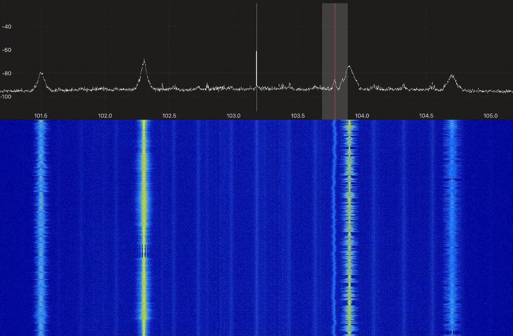
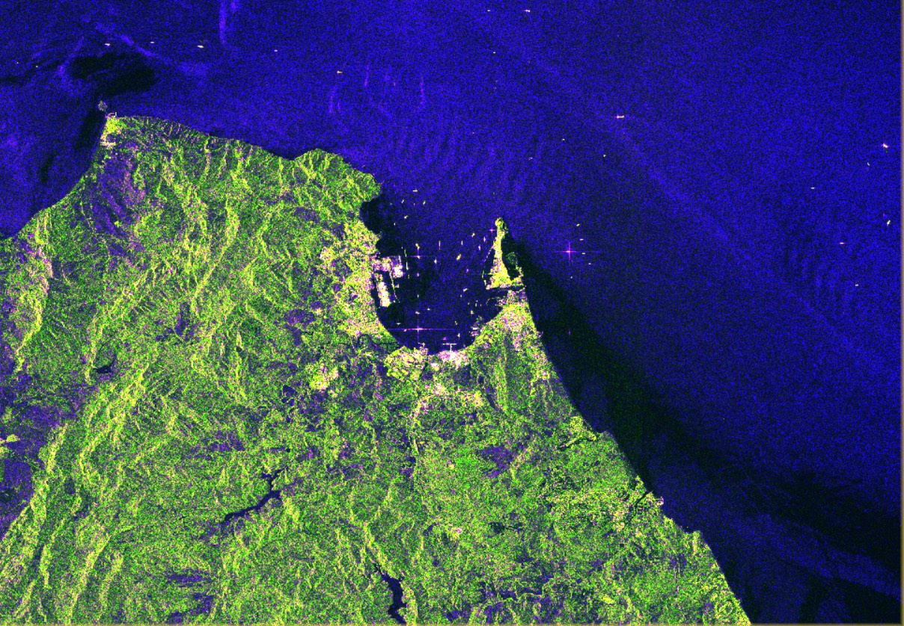
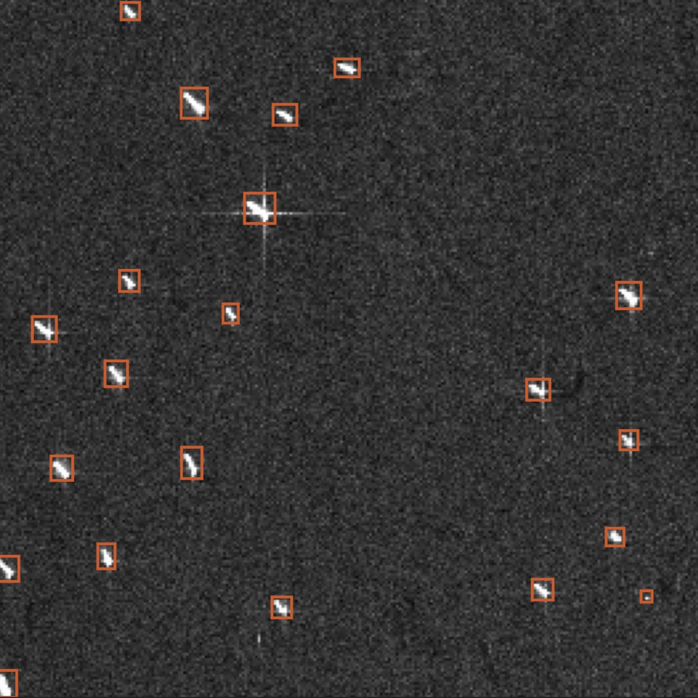
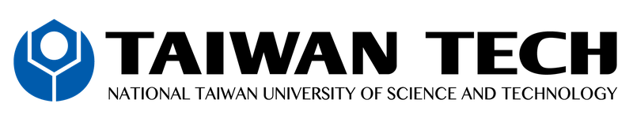

TacEdge 2026
International Workshop on Tactical Edge Technologies
Sensing, communications and autonomy in contested environments.
TacEdge is a one-day workshop on sensing, communications and autonomy in contested environments, with invited talks in the morning and hands-on tutorials in the afternoon. The subjects are RF and optical surveillance, tactical telecommunications and applied AI in the field.
The tactical edge is where equipment has to work with contested spectrum, unreliable links and limited on-board computing.
The morning has three keynotes and four short talks. It is free and open to everyone. In the afternoon, every participant rotates through three hands-on tutorials. The tutorials are in addition to the talks, so a paid ticket covers the whole day. It is limited to 40 places.
The workshop is for people who are not specialists in these fields. It suits Defence and defence-industry staff, researchers and students who want to understand current methods and their limits.
TacEdge 2026 is the first of what is intended to become an annual workshop.
Provisional. Sessions and timings are subject to change.
Three tutorials run in parallel across three sessions, and every participant rotates through all three. No prior experience with radio, radar or machine learning is assumed. Bring a laptop.

Analysing the EM spectrum with SDR
An introduction to software-defined radio and spectrum monitoring. Participants capture a live band with an SDR receiver and learn to read the waterfall display: which signals are present, when they transmit and how much bandwidth they occupy.

SAR and optical satellite imagery
How to use open satellite imagery as an intelligence source. Participants process Sentinel-1 radar data (calibration, speckle reduction and terrain correction) and compare the result with optical imagery of the same area.

Target detection with deep-learning detectors
Participants train YOLO and similar detectors on real imagery and examine the confidence scores they report, including cases where a confident detection is wrong. The session then shows how an ensemble of detectors reduces misclassification and the number of detections an operator has to check by hand.

Robot capture-the-flag competition
The day closes with a knockout tournament on Plato Pod, a table-top arena built at UNSW Canberra in which small robots share one playing field with virtual ones. Eight teams of two take part. The early rounds are played in simulation. The final and the third-place match are played with real robots.

In person only, in the centre of Canberra. Attendees are expected from Korea, Taiwan, the Philippines and Vietnam. International visitors should arrange visas early.
The morning talks are free. The afternoon tutorials are in addition to the talks, so a paid ticket covers the whole day.
Full-day fee in AUD, GST inclusive
Group registration is possible. A small number of tutorial places may be offered free of charge to selected participants.
Registration is through UNSW’s Eventbrite page. Payment is by Eventbrite only. Invoices and bank transfers are not accepted. Refunds can be requested within 7 days of purchase. Registration is subject to the UNSW ticketing terms and conditions.